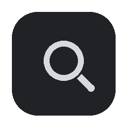
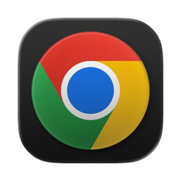

New Release: v8.8-beta9 is now live!
The Windows Taskbar
you missed on Mac
Aero glass look, Start Menu, live window tabs, pinned app launcher - all sitting at the bottom of your screen, exactly where you expect it.
brew tap adityaonx/aerobar https://github.com/adityaonx/AeroBar
brew trust adityaonx/aerobar
HOMEBREW_NO_QUARANTINE=1 brew install --cask aerobar
xattr -rd com.apple.quarantine /Applications/AeroBar.app
-- Downloads
Free (Limited Time) · macOS Tahoe (Supports experimental Sonoma/Sequoia) · Apple Silicon
🖱 Click wallpaper to change colors
All Applications
 AeroBar
AeroBarFinder
Affinity
App Store
Calendar
Safari
Photos
Music
Pinned Shortcuts
Recommended
AeroBar 1
Just now
AeroBar 2
Minutes ago
Dmgs
An hour ago
XCode
Earlier today
Aerobar
Today
Appearance Lab


esc

 AeroBar - AeroBarPanel.swift
AeroBar - AeroBarPanel.swift
AeroBar - Windows-style...
Finder
 AeroBar - Windows-style Task...
AeroBar - Windows-style Task...
Downloads
Illustration purposes only, actual UI may vary
Tint Color